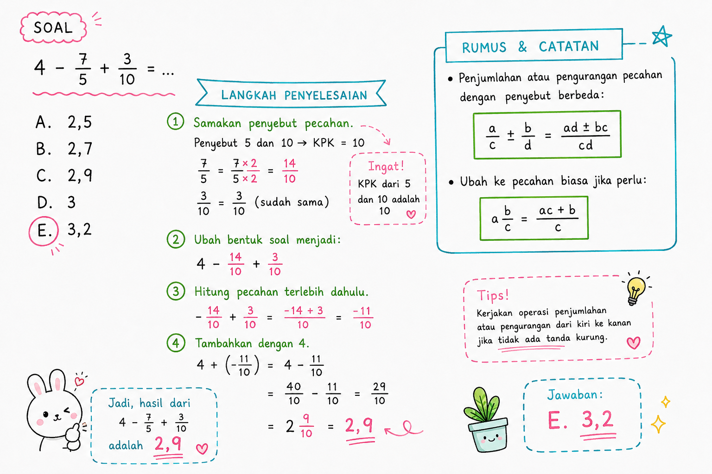

TIU — Operasi Hitung Pecahan Sederhana
Kategori: TIU — Operasi Bilangan
Tingkat: Mudah
ID Soal: 735cda6e
Soal
Hasil dari $4 - \dfrac{7}{5} + \dfrac{3}{10} = \;?$
- a. 2,5
- b. 2,7
- c. 2,9 ✅
- d. 3
- e. 3,2
Aturan yang Dipakai
- + dan − prioritasnya sama → dikerjakan dari kiri ke kanan.
- Pecahan hanya bisa dijumlahkan / dikurangkan kalau penyebutnya sama.
- Samakan penyebut dengan KPK dari semua penyebut.
Pembahasan
Langkah 1 — Cari KPK dari penyebut
Penyebut yang ada: 1 (dari 4), 5 (dari 7/5), dan 10 (dari 3/10).
$$\text{KPK}(1, 5, 10) = 10$$
Langkah 2 — Samakan penyebut ke 10
$$4 = \frac{40}{10}$$
$$\frac{7}{5} = \frac{7 \times 2}{5 \times 2} = \frac{14}{10}$$
$$\frac{3}{10} = \frac{3}{10} \quad \text{(sudah)}$$
Langkah 3 — Substitusi dan hitung
$$\frac{40}{10} - \frac{14}{10} + \frac{3}{10} = \frac{40 - 14 + 3}{10} = \frac{29}{10}$$
Langkah 4 — Ubah ke desimal
$$\frac{29}{10} = 2{,}9$$
Jawaban
$$\boxed{c. \; 2{,}9}$$
Catatan Visual

Konsep Kunci
- KPK = Kelipatan Persekutuan Terkecil → digunakan untuk menyamakan penyebut.
- Bilangan bulat sebagai pecahan: $n = \dfrac{n}{1}$, jadi mudah disamakan ke penyebut apapun.
- Pecahan ke desimal: bagi pembilang dengan penyebut. Contoh: $\dfrac{29}{10} = 29 \div 10 = 2{,}9$.
Jebakan Umum
- ❌ Langsung mengurangi $4 - \dfrac{7}{5}$ tanpa menyamakan penyebut → hasil ngawur.
- ❌ Salah cari KPK (misal pakai 5 padahal ada penyebut 10).
- ❌ Lupa bahwa $4 = \dfrac{40}{10}$ (bukan $\dfrac{4}{10}$).
- ❌ Salah tanda saat menjumlah/kurang pembilang: $40 - 14 + 3 = 29$, bukan $40 - 14 - 3$.